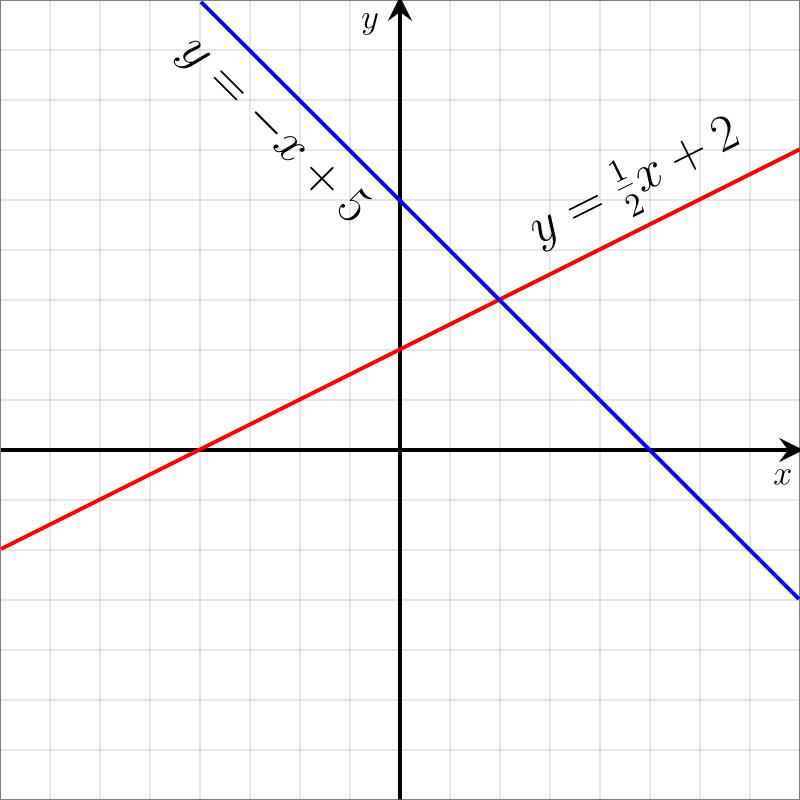

Machine Learning : A brief mathematical introduction
Maybe you have already learnt function at school. Speaking abstractily, a function is a 'program' that return same and certain outputs according to its input in maths and computer science.
Suggest we have a linear function y = -x + 5, if input x = 1, then output y = 4. No matter what time and what place you are, if you set input x as 1, it will always compute the value of output y - 4.
Reversely, if we know a series of pairs of values of inputs and outputs, for example (x, y) = {(1, 4), (2, 3), (3, 2), (4, 1)}, we can reconstruct the function of y = -x + 5 (If we know it is a linear function). So if we get an unknown input of x = 5, we can use the formula to calculate the correspond output value y as 0.

Image Source : wikipedia
Basically saying, machine learning is handling similar, but much more complex and heavier computational tasks. In real world machine learning tasks, the inputs and outputs are not usually a simple integer, but might be a sentences and images which contains hundreds and thousands of values, this give rises to heavy computation workloads and a extremely complex model at the end — but also provides a good result. However, human language varies, wrong text data been inputed, our model/function may not be able to achieve a 100% accuracy (neither do human). So various algorithms are developed to find the model with the best fit — which provides the highest accuracy.